- Módulo: Sistemas Operativos
- Título del trabajo LDAP
- Componentes del grupo: Carlos Santos Carballo
- Curso Académico: 2014/2015
- Fecha de entrega: 3 de Noviembre de 2014
Para empezar esta actividad es necesario tener configurada la ip de la máquina y también en el fichero host ponemos la ip para evitar cualquier fallo.
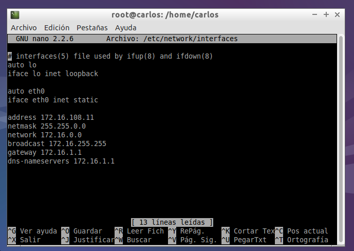 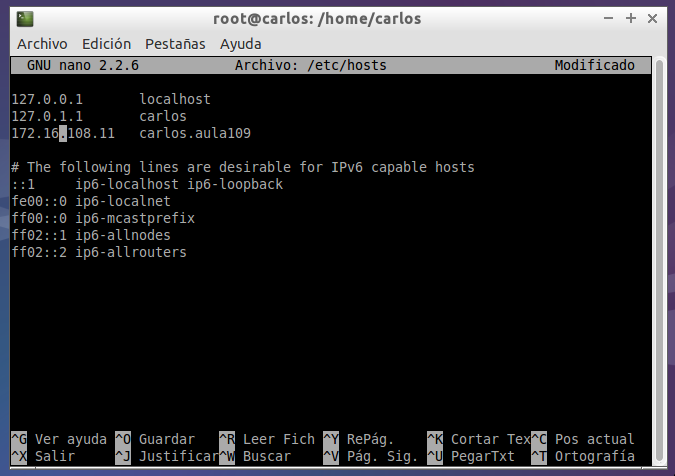A continuación procedemos a instalar el ldap.
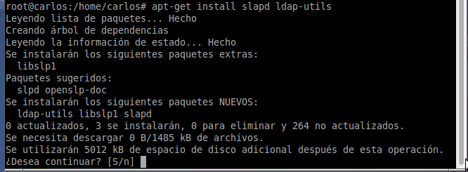Una vez instalado debemos configurarlo,para ello realizaremos el siguiente comando "dpkg-reconfigure slapd". Una vez dentro,realizaremos los pasos tal y como nos indica en el pdf informativo asignado.
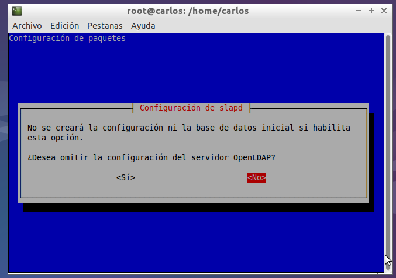 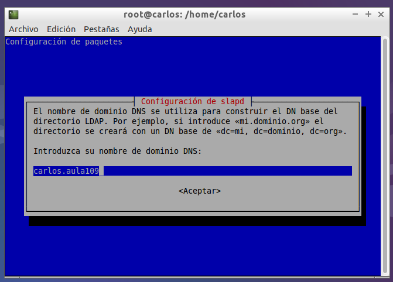 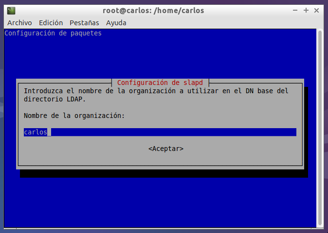 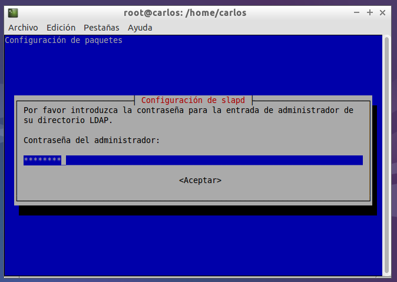 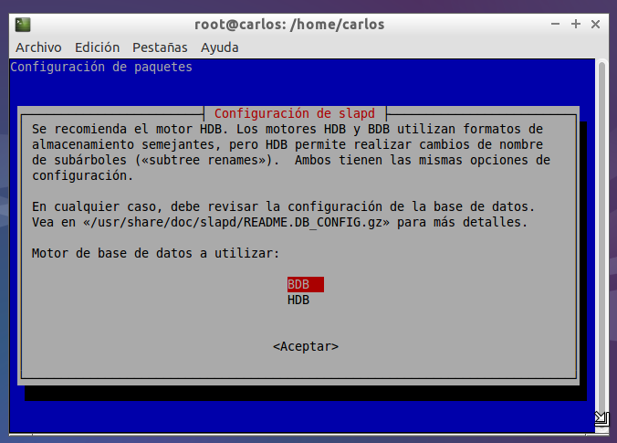 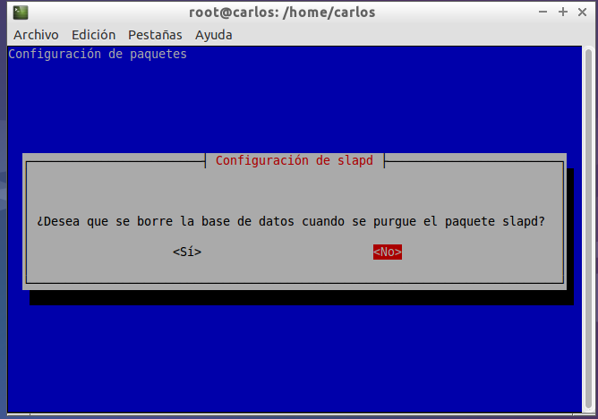 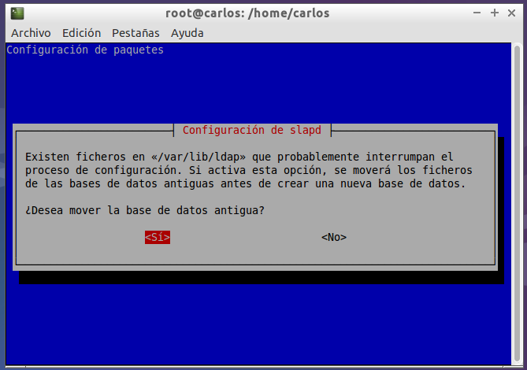 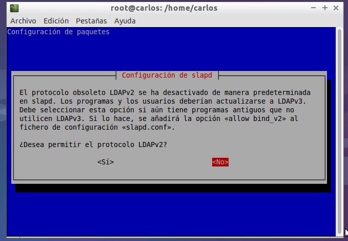Una vez configurado,reiniciamos el ldap.
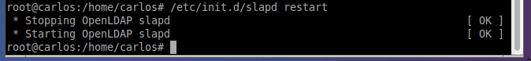Debemos cerciorarnos de que el programa se ejecute una vez iniciado el sistema automaticamente,en mi caso ya lo tenia por defecto.
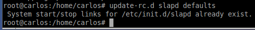Ahora debemos instalar phpldapadmin y apache
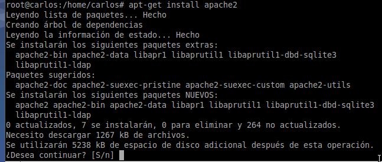 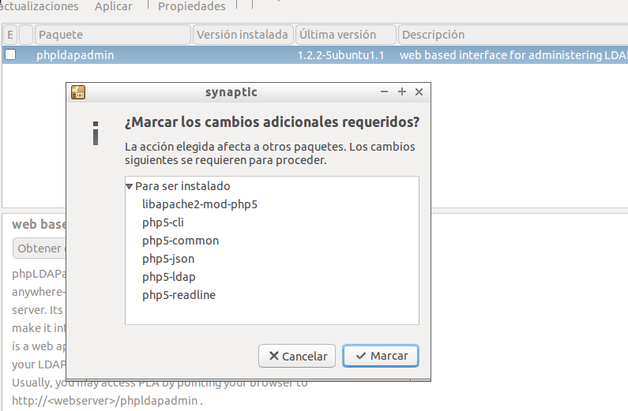Una vez hecho esto comprobamos que podemos acceder a través de la red.
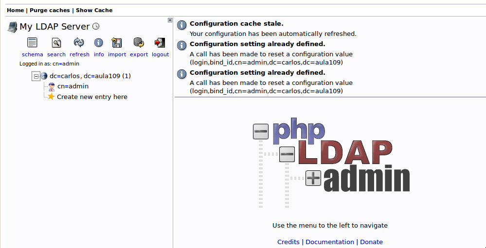Creamos las unidades organizativas: grupos y usuarios. Creamos dentro de ou=grupos, los grupos de profesores y alumnos y creamos dentro de ou=usuarios, varios usuarios profesores y alumnos
Por ultimo instalamos el jxplorer y comprobamos que también podemos acceder.
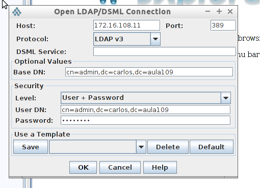 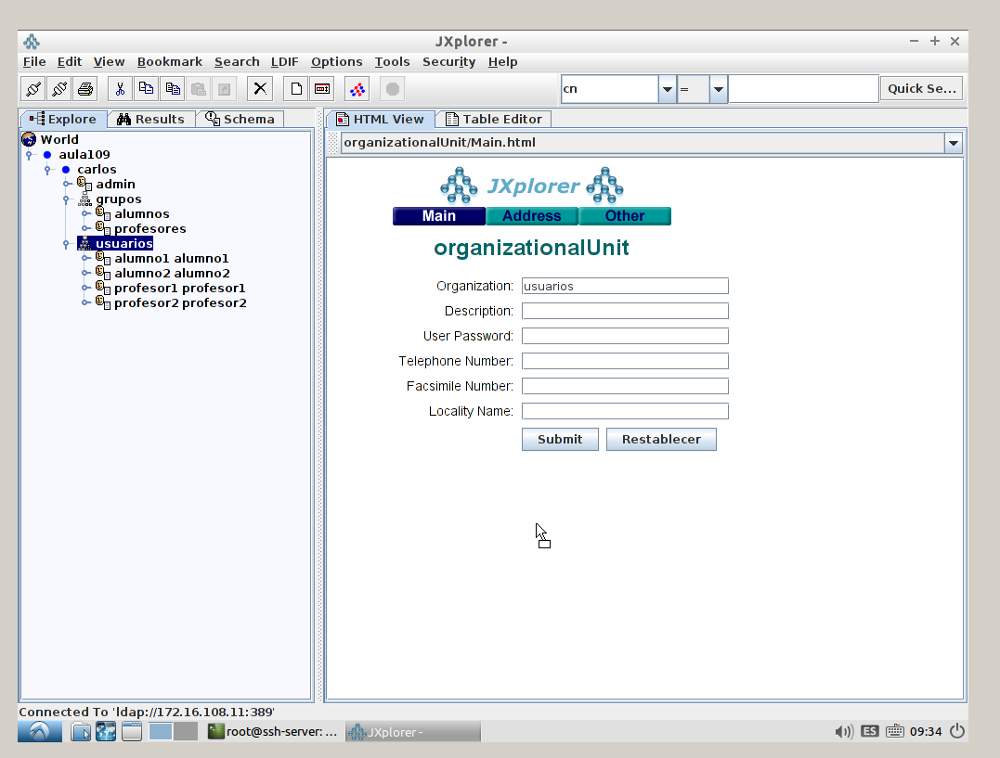